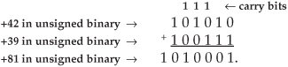
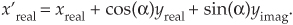
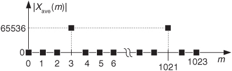
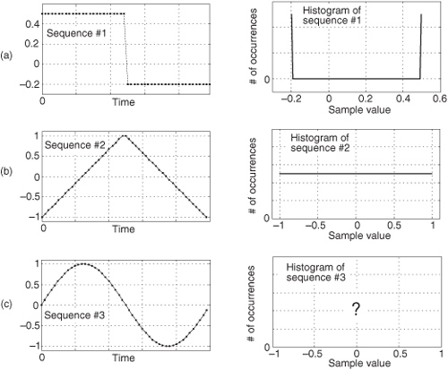

12 Digital Data Formats and Their Effects
In digital signal processing, there are many ways to represent numerical data in computing hardware. These representations, known as data formats, have a profound effect on the accuracy and ease of implementation of any given signal processing algorithm. The simpler data formats enable uncomplicated hardware designs to be used at the expense of a restricted range of number representation and susceptibility to arithmetic errors. The more elaborate data formats are somewhat difficult to implement in hardware, but they allow us to manipulate very large and very small numbers while providing immunity to many problems associated with digital arithmetic. The data format chosen for any given application can mean the difference between processing success and failure—it’s where our algorithmic rubber meets the road.
In this chapter, we’ll introduce the most common types of fixed-point digital data formats and show why and when they’re used. Next, we’ll use analog-to-digital (A/D) converter operations to establish the precision and dynamic range afforded by these fixed-point formats along with the inherent errors encountered with their use. Finally, we’ll cover the interesting subject of floating-point binary formats.
12.1 Fixed-Point Binary Formats
Within digital hardware, numbers are represented by binary digits known as bits—in fact, the term bit originated from the words Binary digIT. A single bit can be in only one of two possible states: either a one or a zero.† A six-bit binary number could, for example, take the form 101101, with the leftmost bit known as the most significant bit (msb); the rightmost bit is called the least significant bit (lsb). The number of bits in a binary number is known as the word length—hence 101101 has a word length of six. Like the decimal number system so familiar to us, the binary number system assumes a weight associated with each digit in the number. That weight is the base of the system (two for binary numbers and ten for decimal numbers) raised to an integral power. To illustrate this with a simple example, the decimal number 4631 is
† Binary numbers are used because early electronic computer pioneers quickly realized that it was much more practical and reliable to use electrical devices (relays, vacuum tubes, transistors, etc.) that had only two states, on or off. Thus, the on/off state of a device could represent a single binary digit.
The factors 103, 102, 101, and 100 are the digit weights in Eq. (12-1). Similarly, the six-bit binary number 101101 is equal to decimal 45 as shown by
Using subscripts to signify the base of a number, we can write Eq. (12-2) as 1011012 = 4510. Equation (12-2) shows us that, like decimal numbers, binary numbers use the place value system where the position of a digit signifies its weight. If we use B to denote a number system’s base, the place value representation of the four-digit number a3a2a1a0 is
In Eq. (12-3), Bn is the weight multiplier for the digit an, where 0 ≤ an ≤ B−1. (This place value system of representing numbers is very old—so old, in fact, that its origin is obscure. However, with its inherent positioning of the decimal or binary point, this number system is so convenient and powerful that its importance has been compared to that of the alphabet[1].)
12.1.1 Octal Numbers
As the use of minicomputers and microprocessors rapidly expanded in the 1960s, people grew tired of manipulating long strings of ones and zeros on paper and began to use more convenient ways to represent binary numbers. One way to express a binary number is an octal format, with its base of eight. (Of course, the only valid digits in the octal format are 0 to 7—the digits 8 and 9 have no meaning in octal representation.)
Converting from binary to octal is as simple as separating the binary number into three-bit groups starting from the right. For example, the binary number 101010012 can be converted to octal format as
101010012 → 10 | 101 | 001 = 2518.
Thus the octal format enables us to represent an eight-digit binary value with a simpler three-digit octal value. However, the relentless march of technology is pushing octal numbers, like wooden tennis rackets, into extinction.
12.1.2 Hexadecimal Numbers
Today the predominant binary number representation format is the hexadecimal number format using 16 as its base. Converting from binary to hexadecimal is done, this time, by separating the binary number into four-bit groups starting from the right. The binary number 101010012 is converted to hexadecimal format as
101010012 → 1010 | 1001 = A916.
If you haven’t seen the hexadecimal format used before, don’t let the A9 digits confuse you. In this format, the characters A, B, C, D, E, and F represent the digits whose decimal values are 10, 11, 12, 13, 14, and 15 respectively. We convert the two groups of bits above to two hexadecimal digits by starting with the left group of bits, 10102 = 1010 = A16, and 10012 = 910 = 916. Hexadecimal format numbers also use the place value system, meaning that A916 = (A · 161 + 9 · 160). For convenience, then, we can represent the eight-digit 101010012 with the two-digit number A916. Table 12-1 lists the permissible digit representations in the number systems discussed thus far.
Table 12-1 Allowable Digit Representations versus Number System Base
In the above example we used a subscripted 16 to signify a hexadecimal number. Note that it’s common, in the literature of binary number formats, to have hexadecimal numbers preceded by special characters to signify that indeed they are hexadecimal. You may see, for example, numbers like $A9 or 0xA9 where the “$” and “0x” characters specify the follow-on digits to be hexadecimal.
12.1.3 Sign-Magnitude Binary Format
For binary numbers to be at all useful in practice, they must be able to represent negative values. Binary numbers do this by dedicating one of the bits in a binary word to indicate the sign of a number. Let’s consider a popular binary format known as sign magnitude. Here, we assume that a binary word’s leftmost bit is a sign bit and the remaining bits represent the magnitude of a number that is always positive. For example, we can say that the four-bit number 00112 is +310 and the binary number 10112 is equal to −310, or
Of course, using one of the bits as a sign bit reduces the magnitude of the numbers we can represent. If an unsigned binary number’s word length is b bits, the number of different values that can be represented is 2b. An eight-bit word, for example, can represent 28 = 256 different integral values. With zero being one of the values we have to express, a b-bit unsigned binary word can represent integers from 0 to 2b−1. The largest value represented by an unsigned eight-bit word is 28−1 = 25510 = 111111112. In the sign-magnitude binary format a b-bit word can represent only a magnitude of ±2b−1−1, so the largest positive or negative value we can represent by an eight-bit sign-magnitude word is ±28−1−1 = ±127.
12.1.4 Two’s Complement Format
Another common binary number scheme, known as the two’s complement format, also uses the leftmost bit as a sign bit. The two’s complement format is the most convenient numbering scheme from a hardware design standpoint and has been used for decades. It enables computers to perform both addition and subtraction using the same hardware adder logic. To obtain the negative version of a positive two’s complement number, we merely complement (change a one to a zero, and change a zero to a one) each bit, add a binary one to the complemented word, and discard any bits carried beyond the original word length. For example, with 00112 representing a decimal 3 in two’s complement format, we obtain a negative decimal 3 through the following steps:
In the two’s complement format, a b-bit word can represent positive amplitudes as great as 2b−1−1, and negative amplitudes as large as −2b−1. Table 12-2 shows four-bit word examples of sign-magnitude and two’s complement binary formats.
Table 12-2 Integer Binary Number Formats
While using two’s complement numbers, we have to be careful when adding two numbers of different word lengths. Consider the case where a four-bit number is added to an eight-bit number:
No problem so far. The trouble occurs when our four-bit number is negative. Instead of adding a +3 to the +15, let’s try to add a −3 to the +15:
The above arithmetic error can be avoided by performing what’s called a sign-extend operation on the four-bit number. This process, typically performed automatically in hardware, extends the sign bit of the four-bit negative number to the left, making it an eight-bit negative number. If we sign-extend the −3 and then perform the addition, we’ll get the correct answer:
12.1.5 Offset Binary Format
Another useful binary number scheme is known as the offset binary format. While this format is not as common as two’s complement, it still shows up in some hardware devices. Table 12-2 shows offset binary format examples for four-bit words. Offset binary represents numbers by subtracting 2b−1 from an unsigned binary value. For example, in the second row of Table 12-2, the offset binary number is 11102. When this number is treated as an unsigned binary number, it’s equivalent to 1410. For four-bit words b = 4 and 2b−1 = 8, so 1410 − 810 = 610, which is the decimal equivalent of 11102 in offset binary. The difference between the unsigned binary equivalent and the actual decimal equivalent of the offset binary numbers in Table 12-2 is always −8. This kind of offset is sometimes referred to as a bias when the offset binary format is used. (It may interest the reader that we can convert back and forth between the two’s complement and offset binary formats merely by complementing a word’s most significant bit.)
The history, arithmetic, and utility of the many available number formats is a very broad field of study. A thorough and very readable discussion of the subject is given by Knuth in reference [2].
12.1.6 Fractional Binary Numbers
All of the binary numbers we’ve considered so far had integer decimal values. Noninteger decimal numbers, numbers with nonzero digits to the right of the decimal point, can also be represented with binary numbers if we use a binary point, also called a radix point, identical in function to our familiar decimal point. (As such, in the binary numbers we’ve discussed so far, the binary point is assumed to be fixed just to the right of the rightmost, lsb, bit.) For example, using the symbol ◊ to denote a binary point, the six-bit unsigned binary number 11◊01012 is equal to decimal 3.3125 as shown by
For our 11◊01012 example in Eq. (12-4) the binary point is set between the second and third most significant bits and we call that binary number a fractional number. Having a stationary position for the binary point is why this binary number format is called fixed-point binary. The unsigned number 11◊01012 has two integer bits and four fractional bits, so, in the parlance of binary numbers, such a number is said to have a 2.4, “two dot four,” format (two integer bits and four fractional bits).
Two’s complement binary numbers can also have this integer plus fraction format, and Table 12-3 shows, for example, the decimal value ranges for all possible eight-bit two’s complement fractional binary numbers. Notice how the 8.0-format row in Table 12-3 shows the decimal values associated with an eight-bit two’s complement binary number whose binary point is to the right of the lsb, signifying an all-integer binary number. On the other hand, the 1.7-format row in Table 12-3 shows the decimal values associated with an eight-bit two’s complement binary number whose binary point is just to the right of the msb (the sign bit), signifying an all-fraction binary number.
Table 12-3 Eight-Bit, Two’s Complement, Fractional Format Values
The decimal value range of a general fractional two’s complement binary number is

where the “# of integer bits” notation means the number of bits to the left of the binary point and “# of fraction bits” means the number of bits to the right of the binary point.
Table 12-3 teaches us two important lessons. First, we can place the implied binary point anywhere we wish in the eight-bit word, just so long as everyone accessing the data agrees on that binary point placement and the designer keeps track of that placement throughout all of the system’s arithmetic computations. Binary arithmetic hardware behavior does not depend on the “agreed upon” binary point placement. Stated in different words, binary point placement does not affect two’s complement binary arithmetic operations. That is, adding or multiplying two binary numbers will yield the same binary result regardless of the implied binary point location within the data words. We leave an example of this behavior as a homework problem.
Second, for a fixed number of bits, fractional two’s complement binary numbers allow us to represent decimal numbers with poor precision over a wide range of values, or we can represent decimal numbers with fine precision but only over a narrow range of values. In practice you must “pick your poison” by choosing the position of the binary point based on what’s more important to you, number range or number precision.
Due to their 16-bit internal data paths, it’s very common for programmable 16-bit DSP chips to use a 1.15 format (one integer bit to represent sign, and 15 fractional bits) to represent two’s complement numbers. These 16-bit signed all-fraction binary numbers are particularly useful because multiplying two such numbers results in an all-fraction product, avoiding any unpleasant binary overflow problems, to be discussed shortly. (Be aware that this 1.15 format is also called Q15 format.) Because the 1.15-format is so commonly used in programmable hardware, we give examples of it and other 16-bit formats in Table 12-4. In that table, the “resolution” is the decimal value of the format’s lsb.
Table 12-4 16-Bit Format Values
Multiplication of two 1.15 binary words results in a 2.30-format (also called a Q30-format) fractional number. That 32-bit product word contains two sign bits and 30 fractional bits, with the msb being called an extended sign bit. We have two ways to convert (truncate) such a 32-bit product to the 1.15 format so that it can be stored as a 16-bit word. They are
• shifting the 32-bit word left by one bit and storing the upper 16 bits, and
• shifting the 32-bit word right by 15 bits and storing the lower 16 bits.
To conclude this fractional binary discussion, we provide the steps to convert a decimal number whose magnitude is less than one, such as an FIR digital filter coefficient, to the 1.15 binary format. As an example, to convert the decimal value 0.452 to the two’s complement 1.15 binary format:
1. Multiply the absolute value of the original decimal number 0.452 by 32768 (215), yielding a scaled decimal 14811.136.
2. Round the value 14811.136 to an integer, using your preferred rounding method, producing a scaled decimal value of 14811.
3. Convert the decimal 14811 to a binary integer and place the binary point to the right of the msb, yielding 0◊011 1001 1101 1011 (39DB16).
4. If the original decimal value was positive, stop now. If the original decimal value was negative, implement a two’s complement conversion by inverting Step 3’s binary bits and add one.
If you, unfortunately, do not have software to perform the above positive decimal integer to 1.15 binary conversion in Step 3, here’s how the conversion can be done (painfully) by hand:
3.1. Divide 14811 by 2, obtaining integer 7405 plus a remainder of 0.5. Because the remainder is not zero, place a one as the lsb of the desired binary number. Our binary number is 1.
3.2. Divide 7405 by 2, obtaining integer 3702 plus a remainder of 0.5. Because the remainder is not zero, place a one as the bit to the left of the lsb bit established in Step 3.1 above. Our binary number is now 11.
3.3. Divide 3702 by 2, obtaining integer 1851 plus a remainder of zero. Because the remainder is zero, place a zero as the bit to the left of the bit established in Step 3.2 above. Our binary number is now 011.
3.4. Continue this process until the integer portion of the divide-by-two quotient is zero. Append zeros to the left of the binary word to extend its length to 16 bits.
Using the above steps to convert decimal 1481110 to binary 1.15 format proceeds as shown in Table 12-5, producing our desired binary number of 0◊011 1001 1101 1011 (39DB16).
Table 12-5 Decimal 14811 to Binary 1.15 Conversion Example
12.2 Binary Number Precision and Dynamic Range
As we implied earlier, for any binary number format, the number of bits in a data word is a key consideration. The more bits used in the word, the better the resolution of the number, and the larger the maximum value that can be represented.† Assuming that a binary word represents the amplitude of a signal, digital signal processing practitioners find it useful to quantify the dynamic range of various binary number schemes. For a signed integer binary word length of b+1 bits (one sign bit and b magnitude bits), the dynamic range is defined by
† Some computers use 64-bit words. Now, 264 is approximately equal to 1.8 · 1019—that’s a pretty large number. So large, in fact, that if we started incrementing a 64-bit counter once per second at the beginning of the universe (≈20 billion years ago), the most significant four bits of this counter would still be all zeros today.
The dynamic range measured in dB is
When 2b is much larger than 1, we can ignore the −1 in Eq. (12-6′) and state that

Equation (12-6″), dimensioned in dB, tells us that the dynamic range of our number system is directly proportional to the word length. Thus, an eight-bit two’s complement word, with seven bits available to represent signal magnitude, has a dynamic range of 6.02 · 7 = 42.14 dB. Most people simplify Eq. (12-6″) by using the rule of thumb that the dynamic range is equal to “6 dB per bit.”
12.3 Effects of Finite Fixed-Point Binary Word Length
The effects of finite binary word lengths touch all aspects of digital signal processing. Using finite word lengths prevents us from representing values with infinite precision, increases the background noise in our spectral estimation techniques, creates nonideal digital filter responses, induces noise in analog-to-digital (A/D) converter outputs, and can (if we’re not careful) lead to wildly inaccurate arithmetic results. The smaller the word lengths, the greater these problems will be. Fortunately, these finite, word-length effects are rather well understood. We can predict their consequences and take steps to minimize any unpleasant surprises. The first finite, word-length effect we’ll cover is the errors that occur during the A/D conversion process.
12.3.1 A/D Converter Quantization Errors
Practical A/D converters are constrained to have binary output words of finite length. Commercial A/D converters are categorized by their output word lengths, which are normally in the range from 8 to 16 bits. A typical A/D converter input analog voltage range is from −1 to +1 volt. If we used such an A/D converter having 8-bit output words, the least significant bit would represent
What this means is that we can represent continuous (analog) voltages perfectly as long as they’re integral multiples of 7.81 millivolts—any intermediate input voltage will cause the A/D converter to output a best estimate digital data value. The inaccuracies in this process are called quantization errors because an A/D output least significant bit is an indivisible quantity. We illustrate this situation in Figure 12-1(a), where the continuous waveform is being digitized by an 8-bit A/D converter whose output is in the sign-magnitude format. When we start sampling at time t = 0, the continuous waveform happens to have a value of 31.25 millivolts (mv), and our A/D output data word will be exactly correct for sample x(0). At time T when we get the second A/D output word for sample x(1), the continuous voltage is between 0 and −7.81 mv. In this case, the A/D converter outputs a sample value of 10000001, representing −7.81 mv, even though the continuous input was not quite as negative as −7.81 mv. The 10000001 A/D output word contains some quantization error. Each successive sample contains quantization error because the A/D’s digitized output values must lie on the horizontal line in Figure 12-1(a). The difference between the actual continuous input voltage and the A/D converter’s representation of the input is shown as the quantization error in Figure 12-1(b). For an ideal A/D converter, the quantization error, a kind of roundoff noise, can never be greater than ±1/2 an lsb, or ±3.905 mv.
Figure 12-1 Quantization errors: (a) digitized x(n) values of a continuous signal; (b) quantization error between the actual analog signal values and the digitized signal values.
While Figure 12-1(b) shows A/D quantization noise in the time domain, we can also illustrate this noise in the frequency domain. Figure 12-2(a) depicts a continuous sinewave of one cycle over the sample interval shown as the dashed line and a quantized version of the time-domain samples of that wave as the dots. Notice how the quantized version of the wave is constrained to have only integral values, giving it a stair-step effect oscillating above and below the true unquantized sinewave. The quantization here is four bits, meaning that we have a sign bit and three bits to represent the magnitude of the wave. With three bits, the maximum peak values for the wave are ±7. Figure 12-2(b) shows the discrete Fourier transform (DFT) of a discrete version of the sinewave whose time-domain sample values are not forced to be integers but have high precision. Notice in this case that the DFT has a nonzero value only at m = 1. On the other hand, Figure 12-2(c) shows the spectrum of the four-bit quantized samples in Figure 12-2(a), where quantization effects have induced noise components across the entire spectral band. If the quantization noise depictions in Figures 12-1(b) and 12-2(c) look random, that’s because they are. As it turns out, even though A/D quantization noise is random, we can still quantify its effects in a useful way.
Figure 12-2 Quantization noise effects: (a) input sinewave applied to a 64-point DFT; (b) theoretical DFT magnitude of high-precision sinewave samples; (c) DFT magnitude of a sinewave quantized to four bits.
In the field of communications, people often use the notion of output signal-to-noise ratio, or SNR = (signal power)/(noise power), to judge the usefulness of a process or device. We can do likewise and obtain an important expression for the output SNR of an ideal A/D converter, SNRA/D, accounting for finite word-length quantization effects. Because quantization noise is random, we can’t explicitly represent its power level, but we can use its statistical equivalent of variance to define SNRA/D measured in dB as
Next, we’ll determine an A/D converter’s quantization noise variance relative to the converter’s maximum input peak voltage Vp. If the full-scale (−Vp to +Vp volts) continuous input range of a b-bit A/D converter is 2Vp, a single quantization level q is that voltage range divided by the number of possible A/D output binary values, or q = 2Vp/2b. (In Figure 12-1, for example, the quantization level q is the lsb value of 7.81 mv.) A depiction of the likelihood of encountering any given quantization error value, called the probability density function p(e) of the quantization error, is shown in Figure 12-3.
Figure 12-3 Probability density function of A/D conversion roundoff error (noise).
This simple rectangular function has much to tell us. It indicates that there’s an equal chance that any error value between −q/2 and +q/2 can occur. By definition, because probability density functions have an area of unity (i.e., the probability is 100 percent that the error will be somewhere under the curve), the amplitude of the p(e) density function must be the area divided by the width, or p(e) = 1/q. From Figure D-7 and Eq. (D-29) in Appendix D, the variance of our uniform p(e) is
We can now express the A/D noise error variance in terms of A/D parameters by replacing q in Eq. (12-9) with q = 2Vp/2b to get
OK, we’re halfway to our goal—with Eq. (12-10) giving us the denominator of Eq. (12-8), we need the numerator. To arrive at a general result, let’s express the input signal in terms of its root mean square (rms), the A/D converter’s peak voltage, and a loading factor LF defined as
† As covered in Appendix D, Section D.2, although the variance σ2 is associated with the power of a signal, the standard deviation is associated with the rms value of a signal.
With the loading factor defined as the input rms voltage over the A/D converter’s peak input voltage, we square and rearrange Eq. (12-11) to show the signal variance as

Substituting Eqs. (12-10) and (12-12) in Eq. (12-8),
Eq. (12-13) gives us the SNRA/D of an ideal b-bit A/D converter in terms of the loading factor and the number of bits b. Figure 12-4 plots Eq. (12-13) for various A/D word lengths as a function of the loading factor. Notice that the loading factor in Figure 12-4 is never greater than −3 dB, because the maximum continuous A/D input peak value must not be greater than Vp volts. Thus, for a sinusoid input, its rms value must not be greater than volts (3 dB below Vp).
Figure 12-4 SNRA/D of ideal A/D converters as a function of loading factor in dB.

When the input sinewave’s peak amplitude is equal to the A/D converter’s full-scale voltage Vp, the full-scale LF is

Under this condition, the maximum A/D output SNR from Eq. (12-13) is
This discussion of SNR relative to A/D converters means three important things to us:
1. An ideal A/D converter will have an SNRA/D defined by Eq. (12-13), so any discrete x(n) signal produced by a b-bit A/D converter can never have an SNR greater than Eq. (12-13). (Appendix D dicusses methods for computing the SNR of discrete signals.) For example, let’s say we want to digitize a continuous signal whose SNR is 55 dB. Using an ideal eight-bit A/D converter with its full-scale SNRA/D of 6.02 · 8 + 1.76 = 49.9 dB from Eq. (12-15), the quantization noise will contaminate the digitized values, and the resultant digital signal’s SNR can be no better than 49.9 dB. We’ll have lost signal SNR through the A/D conversion process. (A ten-bit A/D, with its ideal SNRA/D ≈ 62 dB, could be used to digitize a 55 dB SNR continuous signal to reduce the SNR degradation caused by quantization noise.) Equations (12-13) and (12-15) apply to ideal A/D converters and don’t take into account such additional A/D noise sources as aperture jitter error, missing output bit patterns, and other nonlinearities. So actual A/D converters are likely to have SNRs that are lower than that indicated by theoretical Eq. (12-13). To be safe in practice, it’s sensible to assume that SNRA/D-max is 3 to 6 dB lower than indicated by Eq. (12-15).
2. Equation (12-15) is often expressed in the literature, but it can be a little misleading because it’s imprudent to force an A/D converter’s input to full scale. It’s wise to drive an A/D converter to some level below full scale because inadvertent overdriving will lead to signal clipping and will induce distortion in the A/D’s output. So Eq. (12-15) is overly optimistic, and, in practice, A/D converter SNRs will be less than indicated by Eq. (12-15). The best approximation for an A/D’s SNR is to determine the input signal’s rms value that will never (or rarely) overdrive the converter input, and plug that value into Eq. (12-11) to get the loading factor value for use in Eq. (12-13).† Again, using an A/D converter with a wider word length will alleviate this problem by increasing the available SNRA/D.
† By the way, some folks use the term crest factor to describe how hard an A/D converter’s input is being driven. The crest factor is the reciprocal of the loading factor, or CF = Vp/(rms of the input signal).
3. Remember, now, real-world continuous signals always have their own inherent continuous SNR, so using an A/D converter whose SNRA/D is a great deal larger than the continuous signal’s SNR serves no purpose. In this case, we would be wasting A/D converter bits by digitizing the analog signal’s noise to a high degree of accuracy, which does not improve our digital signal’s overall SNR. In general, we want the converter’s SNRA/D value to be approximately 6 dB greater than an analog signal’s SNR.
A word of caution is appropriate here concerning our analysis of A/D converter quantization errors. The derivations of Eqs. (12-13) and (12-15) are based upon three assumptions:
1. The cause of A/D quantization errors is a stationary random process; that is, the performance of the A/D converter does not change over time. Given the same continuous input voltage, we always expect an A/D converter to provide exactly the same output binary code.
2. The probability density function of the A/D quantization error is uniform. We’re assuming that the A/D converter is ideal in its operation and all possible errors between −q/2 and +q/2 are equally likely. An A/D converter having stuck bits or missing output codes would violate this assumption. High-quality A/D converters being driven by continuous signals that cross many quantization levels will result in our desired uniform quantization noise probability density function.
3. The A/D quantization errors are uncorrelated with the continuous input signal. If we were to digitize a single continuous sinewave whose frequency was harmonically related to the A/D sample rate, we’d end up sampling the same input voltage repeatedly and the quantization error sequence would not be random. The quantization error would be predictable and repetitive, and our quantization noise variance derivation would be invalid. In practice, complicated continuous signals such as music or speech, with their rich spectral content, avoid this problem.
To conclude our discussion of A/D converters, let’s consider one last topic. In the literature the reader is likely to encounter the expression
Equation (12-16) is used by test equipment manufacturers to specify the sensitivity of test instruments using a beff parameter known as the number of effective bits, or effective number of bits (ENOB)[3–8]. Equation (12-16) is merely Eq. (12-15) solved for b and is based on the assumption that the A/D converter’s analog input peak-peak voltage spans roughly 90 percent of the converter’s full-scale voltage range. Test equipment manufacturers measure the actual SNR of their product, indicating its ability to capture continuous input signals relative to the instrument’s inherent noise characteristics. Given this true SNR, they use Eq. (12-16) to determine the beff value for advertisement in their product literature. The larger the beff, the greater the continuous voltage that can be accurately digitized relative to the equipment’s intrinsic quantization noise.
12.3.2 Data Overflow
The next finite, word-length effect we’ll consider is called overflow. Overflow is what happens when the result of an arithmetic operation has too many bits, or digits, to be represented in the hardware registers designed to contain that result. We can demonstrate this situation to ourselves rather easily using a simple four-function, eight-digit pocket calculator. The sum of a decimal 9.9999999 plus 1.0 is 10.9999999, but on an eight-digit calculator the sum is 10.999999 as
The hardware registers, which contain the arithmetic result and drive the calculator’s display, can hold only eight decimal digits; so the least significant digit is discarded (of course). Although the above error is less than one part in ten million, overflow effects can be striking when we work with large numbers. If we use our calculator to add 99,999,999 plus 1, instead of getting the correct result of 100 million, we’ll get a result of 1. Now that’s an authentic overflow error!
Let’s illustrate overflow effects with examples more closely related to our discussion of binary number formats. First, adding two unsigned binary numbers is as straightforward as adding two decimal numbers. The sum of 42 plus 39 is 81, or

In this case, two 6-bit binary numbers required 7 bits to represent the results. The general rule is the sum of m individual b-bit binary numbers can require as many as [b + log2(m)] bits to represent the results. So, for example, a 24-bit result register (accumulator) is needed to accumulate the sum of sixteen 20-bit binary numbers, or 20 + log2(16) = 24. The sum of 256 eight-bit words requires an accumulator whose word length is [8 + log2(256)], or 16 bits, to ensure that no overflow errors occur.
In the preceding example, if our accumulator word length was six bits, an overflow error occurs as
Here, the most significant bit of the result overflowed the six-bit accumulator, and an error occurred.
With regard to overflow errors, the two’s complement binary format has two interesting characteristics. First, under certain conditions, overflow during the summation of two numbers causes no error. Second, with multiple summations, intermediate overflow errors cause no problems if the final magnitude of the sum of the b-bit two’s complement numbers is less than 2b−1. Let’s illustrate these properties by considering the four-bit two’s complement format in Figure 12-5, whose binary values are taken from Table 12-2.
Figure 12-5 Four-bit two’s complement binary numbers.
The first property of two’s complement overflow, which sometimes causes no errors, can be shown by the following examples:
Then again, the following examples show how two’s complement overflow sometimes does cause errors:

The rule with two’s complement addition is if the carry bit into the sign bit is the same as the overflow bit out of the sign bit, the overflow bit can be ignored, causing no errors; if the carry bit into the sign bit is different from the overflow bit out of the sign bit, the result is invalid. An even more interesting property of two’s complement numbers is that a series of b-bit word summations can be performed where intermediate sums are invalid, but the final sum will be correct if its magnitude is less than 2b−1. We show this by the following example. If we add a +6 to a +7, and then add a −7, we’ll encounter an intermediate overflow error but our final sum will be correct, as
The magnitude of the sum of the three four-bit numbers was less than 24−1 (<8), so our result was valid. If we add a +6 to a +7, and next add a −5, we’ll encounter an intermediate overflow error, and our final sum will also be in error because its magnitude is not less than 8.
Another situation where overflow problems are conspicuous is during the calculation of the fast Fourier transform (FFT). It’s difficult at first to imagine that multiplying complex numbers by sines and cosines can lead to excessive data word growth—particularly because sines and cosines are never greater than unity. Well, we can show how FFT data word growth occurs by considering a decimation-in-time FFT butterfly from Figure 4-14(c), repeated here as Figure 12-6(a), and grinding through a little algebra. The expression for the x’ output of this FFT butterfly, from Eq. (4-26), is
Figure 12-6 Data overflow scenarios: (a) single decimation-in-time FFT butterfly; (b) 2nd-order IIR filter.
Breaking up the butterfly’s x and y inputs into their real and imaginary parts and remembering that , we can express Eq. (12-17) as
If we let α be the twiddle factor angle of 2πk/N, and recall that e−jα = cos(α) − jsin(α), we can simplify Eq. (12-18) as
If we look, for example, at just the real part of the x’ output, x’real, it comprises the three terms

If xreal, yreal, and yimag are of unity value when they enter the butterfly and the twiddle factor angle α = 2πk/N happens to be π/4 = 45°, then, x’real can be greater than 2 as
So we see that the real part of a complex number can more than double in magnitude in a single stage of an FFT. The imaginary part of a complex number is equally likely to more than double in magnitude in a single FFT stage. Without mitigating this word growth problem, overflow errors could render an FFT algorithm useless.
Overflow problems can also be troublesome for fixed-point systems containing feedback as shown in Figure 12-6(b). Examples of such networks are infinite impulse response (IIR) filters, cascaded integrator-comb (CIC) filters, and exponential averagers. The hardware register (accumulator) containing w(n) must have a binary word width that will hold data values as large as the network’s DC (zero Hz) gain G times the input signal, or G · x(n). To avoid data overflow, the number of bits in the w(n)-results register must be at least
where means that if log2(G) is not an integer, round it up to the next larger integer. (As a quick reminder, we can determine the DC gain of a digital network by substituting z = 1 in the network’s z-domain transfer function.)
OK, overflow problems are handled in one of two ways—by truncation or rounding—each inducing its own individual kind of quantization errors, as we shall see.
12.3.3 Truncation
Truncation is the process where some number of least significant bits are discarded from a binary number. A practical example of truncation is the situation where the results of a processing system are 16-bit signal samples that must be passed on to a 12-bit digital-to-analog converter. To avoid overflowing the converter’s 12-bit input register, the least significant 4 bits of the 16-bit signal samples must be discarded. Thinking about decimal numbers, if we’re quantizing to decimal integer values, for example, the real value 1.2 would be quantized to 1.
An example of truncation to integer values is shown in Figure 12-7(a), where all values of x in the range of 0 ≤ x < 1 are set equal to 0, values of x in the range of 1 ≤ x < 2 are set equal to 1, and so on. The quantization level (value), in that figure, is q = 1. The quantization error induced by this truncation is the vertical distance between the horizontal bold lines and the dashed diagonal line in Figure 12-7(a).
Figure 12-7 Truncation: (a) quantization nonlinearities; (b) error probability density function; (c) binary truncation.
As we did with A/D converter quantization errors, we can call upon the concept of probability density functions to characterize the quantization errors induced by truncation. The probability density function of truncation errors, in terms of the quantization level q, is shown in Figure 12-7(b). In Figure 12-7(a) the quantization level q is 1, so in this case we can have truncation errors as great as −1. Drawing upon our results from Eqs. (D-11) and (D-12) in Appendix D, the mean and variance of our uniform truncation error probability density function are expressed as
and
The notion of binary number truncation is shown in Figure 12-7(c), where the ten-bit binary word W is to be truncated to six bits by discarding the four Truncate bits. So in this binary truncation situation, q in Figure 12-7(b) is equal to the least significant bit (lsb) value (bit R0) of the retained binary word.
In a sense, truncation error is the price we pay for the privilege of using integer binary arithmetic. One aspect of this is the error introduced when we use truncation to implement division by some integer power of two. A quick way of dividing a binary value by 2K is to shift a binary word K bits to the right; that is, we’re truncating the data value (not the binary word width) by discarding the rightmost K bits after the right shift.
For example, let’s say we have the value 31 represented by the six-bit binary number 0111112, and we want to divide it by 16 through shifting the bits K = 4 places to the right and discarding those shifted bits. After the right shift we have a binary quotient of 0000012. Well, we see the significance of the problem because this type of division gave us a result of one instead of the correct quotient 31/16 = 1.9375. Our division-by-truncation error here is roughly 50 percent of the correct quotient. Had our original dividend been 63 represented by the six-bit binary number 1111112, dividing it by 16 through a four-bit shift would give us an answer of binary 0000112, or decimal three. The correct answer, of course, is 63/16 = 3.9375. In this case the percentage error is 0.9375/3.9375, or about 23.8 percent. So, the larger the dividend, the lower the truncation error.
If we study these kinds of errors, we’ll find that truncation error depends on three things: the number of value bits shifted and discarded, the values of the discarded bits (were those dropped bits ones or zeros?), and the magnitude of the binary number left over after shifting. Although a complete analysis of these truncation errors is beyond the scope of this book, a practical example of how division by truncation can cause serious numerical errors is given in reference [9].
Unfortunately, truncation induces a DC bias (an error whose average is a nonzero negative number) on the truncated signal samples, as predicted by Eq. (12-23). We see this behavior in Figure 12-7(b) where the truncation error is always negative. Inducing a constant (DC) error to a signal sequence can be troublesome in many applications because the always-negative truncation error can grow to an unacceptable level in subsequent computations. So, in an effort to avoid overflow errors, rounding (discussed in the next section) is often preferred over truncation.
12.3.4 Data Rounding
Rounding is where a binary number requiring truncation is slightly modified before the truncation operation is performed. Let’s review the behavior of rounding by first defining rounding as the process wherein a number is modified such that it is subsequently represented by, or rounded off to, its nearest quantization level. For example, if we’re quantizing to integer values, the decimal number 1.2 would be quantized to 1, and the number 1.6 would be quantized to 2. This is shown in Figure 12-8(a), where all values of x in the range of −0.5 ≤ x < 0.5 are set equal to 0, values of x in the range of 0.5 ≤ x < 1.5 are set equal to 1, and so on.
Figure 12-8 Rounding: (a) quantization nonlinearities; (b) error probability density function.
The quantization error induced by such a rounding operation is the vertical distance between the bold horizontal lines and the dashed diagonal line in Figure 12-8(a). The probability density function of the error induced by rounding, in terms of the quantization level q, is shown in Figure 12-8(b). In Figure 12-8(a) the quantization level is q = 1, so in this case we can have quantization error magnitudes no greater than q/2, or 1/2. Using our Eqs. (D-11) and (D-12) results from Appendix D, the mean and variance of our uniform rounding probability density function are expressed as
and
The notion of binary number rounding can be described using Figure 12-7(c), where the binary word W is to be truncated by discarding the four Truncate bits. With rounding, the binary word W is modified before the Truncate bits are discarded. So with binary rounding, q in Figure 12-8(b) is equal to the lsb value of the preserved binary word R0.
Let’s not forget: the purpose of rounding, its goal in life, is to avoid data overflow errors while reducing the DC bias error (an error whose average is not zero) induced by simple truncation. Rounding achieves this goal because, in theory, its average error is zero as shown by Eq. (12-25). Next we discuss two popular methods of data rounding.
A common form of binary data rounding is straightforward to implement. Called round-to-nearest, it comprises the two-step process of adding one to the most significant (leftmost) of the lsb bits to be discarded, bit T3 of word W in Figure 12-7(c), and then discarding the appropriate Truncate bits. For an example of this rounding method, let’s say we have 16-bit signal samples destined to be routed to a 12-bit digital-to-analog converter. To avoid overflowing the converter’s 12-bit input register, we add a binary value of 10002 (decimal 810 = 23) to the original 16-bit sample value and then truncate (discard) the sum’s least significant 4 bits. As another example of round-to-nearest rounding, if a 32-bit “long” word is rounded to 16 bits, a value of 215 is added to the long word before discarding the sum’s 16 least significant bits.
Stated in different words, this round-to-nearest rounding method means: If the T3 bit is a one, increment the R bits by one. Then shift the R bits to the right, discarding the Truncate bits.
The round-to-nearest method does reduce the average (DC bias) of the quantization error induced by simple truncation; however the round-to-nearest method’s average error bias is close to but not exactly equal to zero. (That’s because the R bits, in Figure 12-7(c), are always incremented when the value of the Truncate bits is equal to the value R0/2. This means that over time the R bits are rounded up slightly more often than they are rounded down.) With additional bit checking we can force the average rounding error to be exactly zero using a scheme called convergent rounding.
Convergent rounding, also called round to even, is a slightly more complicated method of rounding, but one that yields zero-average rounding error on the rounded binary signal samples. Similar to the round-to-nearest method, convergent rounding does not always increment Figure 12-7(c)’s R bits (the value Retain) when the value of the Truncate bits is equal to R0/2. In the convergent rounding scheme, when Truncate = R0/2, the value Retain is only incremented if its original value was an odd number. This clever process is shown in Figure 12-9.
Figure 12-9 Convergent rounding.
OK, here’s what we’ve learned about rounding: Relative to simple truncation, rounding requires more computations, but rounding both minimizes the constant-level (DC bias) quantization error induced by truncation alone, and rounding has a lower maximum quantization error. So rounding is often the preferred method used to avoid binary data overflow errors. The above two rounding methods can, by the way, be used in two’s complement number format systems.
As a practical rule, to retain maximum numerical precision, all necessary full-width binary arithmetic should be performed first and then rounding (or truncation) should be performed as the very last operation. For example, if we must add twenty 16-bit binary numbers followed by rounding the sum to 12 bits, we should perform the additions at full 16-bit precision and, as a final step, round the summation result to 12 bits.
In digital signal processing, statistical analysis of quantization error effects is complicated because quantization is a nonlinear process. Analytical results depend on the types of quantization errors, the magnitude of the data being represented, the numerical format used, and which of the many FFT or digital filter structures we are implementing. Be that as it may, digital signal processing experts have developed simplified error models whose analysis has proved useful. Although discussion of these analysis techniques and their results is beyond the scope of this introductory text, many references are available for the energetic reader[10–18]. (Reference [11] has an extensive reference list of its own on the topic of quantization error analysis.)
Again, the overflow problems using fixed-point binary formats—which we try to alleviate with truncation or rounding—arise because so many digital signal processing algorithms comprise large numbers of additions or multiplications. This obstacle, particularly in hardware implementations of digital filters and the FFT, is avoided by hardware designers through the use of floating-point binary number formats.
12.4 Floating-Point Binary Formats
Floating-point binary formats allow us to overcome most of the limitations of precision and dynamic range mandated by fixed-point binary formats, particularly in reducing the ill effects of overflow[19]. Floating-point formats segment a data word into two parts: a mantissa m and an exponent e. Using these parts, the value of a binary floating-point number n is evaluated as
that is, the number’s value is the product of the mantissa and 2 raised to the power of the exponent. (Mantissa is a somewhat unfortunate choice of terms because it has a meaning here very different from that in the mathematics of logarithms. Mantissa originally meant the decimal fraction of a logarithm.† However, due to its abundance in the literature we’ll continue using the term mantissa here.) Of course, both the mantissa and the exponent in Eq. (12-27) can be either positive or negative numbers.
† For example, the common logarithm (log to the base 10) of 256 is 2.4082. The 2 to the left of the decimal point is called the characteristic of the logarithm and the 4082 digits are called the mantissa. The 2 in 2.4082 does not mean that we multiply .4082 by 102. The 2 means that we take the antilog of .4082 to get 2.56 and multiply that by 102 to get 256.
Let’s assume that a b-bit floating-point number will use be bits for the fixed-point signed exponent and bm bits for the fixed-point signed mantissa. The greater the number of be bits used, the larger the dynamic range of the number. The more bits used for bm, the better the resolution, or precision, of the number. Early computer simulations conducted by the developers of b-bit floating-point formats indicated that the best trade-off occurred with be ≈ b/4 and bm ≈ 3b/4. We’ll see that for typical 32-bit floating-point formats used today, be ≈ 8 bits and bm ≈ 24 bits.
To take advantage of a mantissa’s full dynamic range, most implementations of floating-point numbers treat the mantissa as a fractional fixed-point binary number, shift the mantissa bits to the right or left, so that the most significant bit is a one, and adjust the exponent accordingly. The process of shifting a binary bit pattern so that the most significant bit is a one is called bit normalization. When normalized, the mantissa bits are typically called the fraction of the floating-point number, instead of the mantissa. For example, the decimal value 3.687510 can be represented by the fractional binary number 11.10112. If we use a two-bit exponent with a six-bit fraction floating-point word, we can just as well represent 11.10112 by shifting it to the right two places and setting the exponent to two as
The floating-point word above can be evaluated to retrieve our decimal number again as
After some experience using floating-point normalization, users soon realized that always having a one in the most significant bit of the fraction was wasteful. That redundant one was taking up a single bit position in all data words and serving no purpose. So practical implementations of floating-point formats discard that one, assume its existence, and increase the useful number of fraction bits by one. This is why the term hidden bit is used to describe some floating-point formats. While increasing the fraction’s precision, this scheme uses less memory because the hidden bit is merely accounted for in the hardware arithmetic logic. Using a hidden bit, the fraction in Eq. (12-28)’s floating-point number is shifted to the left one place and would now be
Recall that the exponent and mantissa bits were fixed-point signed binary numbers, and we’ve discussed several formats for representing signed binary numbers, i.e., sign magnitude, two’s complement, and offset binary. As it turns out, all three signed binary formats are used in industry-standard floating-point formats. The most common floating-point formats, all using 32-bit words, are listed in Table 12-6.
Table 12-6 Floating–Point Number Formats
The IEEE P754 floating-point format is the most popular because so many manufacturers of floating-point integrated circuits comply with this standard[8,20–22]. Its exponent e is offset binary (biased exponent), and its fraction is a sign-magnitude binary number with a hidden bit that’s assumed to be 20. The decimal value of a normalized IEEE P754 floating-point number is evaluated as
where f is the decimal-formatted value of the fractional bits divided by 223. Value e is the decimal value of the floating-point number’s exponent bits.
The IBM floating-point format differs somewhat from the other floating-point formats because it uses a base of 16 rather than 2. Its exponent is offset binary, and its fraction is sign magnitude with no hidden bit. The decimal value of a normalized IBM floating-point number is evaluated as
The DEC floating-point format uses an offset binary exponent, and its fraction is sign magnitude with a hidden bit that’s assumed to be 2−1. The decimal value of a normalized DEC floating-point number is evaluated as
MIL-STD 1750A is a United States Military Airborne floating-point standard. Its exponent e is a two’s complement binary number residing in the least significant eight bits. MIL-STD 1750A’s fraction is also a two’s complement number (with no hidden bit), and that’s why no sign bit is specifically indicated in Table 12-6. The decimal value of a MIL-STD 1750A floating-point number is evaluated as
Notice how the floating-point formats in Table 12-6 all have word lengths of 32 bits. This was not accidental. Using 32-bit words makes these formats easier to handle using 8-, 16-, and 32-bit hardware processors. That fact not withstanding and given the advantages afforded by floating-point number formats, these formats do require a significant amount of logical comparisons and branching to correctly perform arithmetic operations. Reference [23] provides useful flow charts showing what procedural steps must be taken when floating-point numbers are added and multiplied.
12.4.1 Floating-Point Dynamic Range
Attempting to determine the dynamic range of an arbitrary floating-point number format is a challenging exercise. We start by repeating the expression for a number system’s dynamic range from Eq. (12-6) as
When we attempt to determine the largest and smallest possible values for a floating-point number format, we quickly see that they depend on such factors as
• the position of the binary point
• whether a hidden bit is used or not (If used, its position relative to the binary point is important.)
• the base value of the floating-point number format
• the signed binary format used for the exponent and the fraction (For example, recall from Table 12-2 that the binary two’s complement format can represent larger negative numbers than the sign-magnitude format.)
• how unnormalized fractions are handled, if at all (Unnormalized, also called gradual underflow, means a nonzero number that’s less than the minimum normalized format but can still be represented when the exponent and hidden bit are both zero.)
• how exponents are handled when they’re either all ones or all zeros. (For example, the IEEE P754 format treats a number having an all-ones exponent and a nonzero fraction as an invalid number, whereas the DEC format handles a number having a sign = 1 and a zero exponent as a special instruction instead of a valid number.)
Trying to develop a dynamic range expression that accounts for all the possible combinations of the above factors is impractical. What we can do is derive a rule-of-thumb expression for dynamic range that’s often used in practice[8,22,24].
Let’s assume the following for our derivation: the exponent is a be-bit offset binary number, the fraction is a normalized sign-magnitude number having a sign bit and bm magnitude bits, and a hidden bit is used just left of the binary point. Our hypothetical floating-point word takes the following form:
First we’ll determine what the largest value can be for our floating-point word. The largest fraction is a one in the hidden bit, and the remaining bm fraction bits are all ones. This would make fraction f = [1 + (1 − 2−bm)]. The first 1 in this expression is the hidden bit to the left of the binary point, and the value in parentheses is all bm bits equal to ones to the right of the binary point. The greatest positive value we can have for the be-bit offset binary exponent is 2(2be−1−1). So the largest value that can be represented with the floating-point number is the largest fraction raised to the largest positive exponent, or
The smallest value we can represent with our floating-point word is a one in the hidden bit times two raised to the exponent’s most negative value, 2−(2be−1), or
Plugging Eqs. (12-36) and (12-37) into Eq. (12-35),
Now here’s where the thumb comes in—when bm is large, say over seven, the 2−bm value approaches zero; that is, as bm increases, the all-ones fraction (1 − 2−bm) value in the numerator approaches 1. Assuming this, Eq. (12-38) becomes
Using Eq. (12-39), we can estimate, for example, the dynamic range of the single-precision IEEE P754 standard floating-point format with its eight-bit exponent:
Although we’ve introduced the major features of the most common floating-point formats, there are still more details to learn about floating-point numbers. For the interested reader, the references given in this section provide a good place to start.
12.5 Block Floating-Point Binary Format
A marriage of fixed-point and floating-point binary formats is known as block floating point. This scheme is used, particularly in dedicated FFT integrated circuits, when large arrays, or blocks, of associated data are to be manipulated mathematically. Block floating-point schemes begin by examining all the words in a block of data, normalizing the largest-valued word’s fraction, and establishing the correct exponent. This normalization takes advantage of the fraction’s full dynamic range. Next, the fractions of the remaining data words are shifted appropriately, so that they can use the exponent of the largest word. In this way, all of the data words use the same exponent value to conserve hardware memory.
In FFT implementations, the arithmetic is performed treating the block normalized data values as fixed-point binary. However, when an addition causes an overflow condition, all of the data words are shifted one bit to the right (division by two), and the exponent is incremented by one. As the reader may have guessed, block floating-point formats have increased dynamic range and avoid the overflow problems inherent in fixed-point formats but do not reach the performance level of true floating-point formats[8,25,26].
References
[1] Neugebauer, O. “The History of Ancient Astronomy,” Journal of Near Eastern Studies, Vol. 4, 1945, p. 12.
[2] Knuth, D. E. The Art of Computer Programming: Seminumerical Methods, Vol. 2, Addison-Wesley, Reading, Massachusetts, 1981, Section 4.1, p. 179.
[3] Kester, W. “Peripheral Circuits Can Make or Break Sampling-ADC Systems,” EDN Magazine, October 1, 1992.
[4] Grove, M. “Measuring Frequency Response and Effective Bits Using Digital Signal Processing Techniques,” Hewlett-Packard Journal, February 1992.
[5] Tektronix. “Effective Bits Testing Evaluates Dynamic Range Performance of Digitizing Instruments,” Tektronix Application Note, No. 45W-7527, December 1989.
[6] Ushani, R. “Subranging ADCs Operate at High Speed with High Resolution,” EDN Magazine, April 11, 1991.
[7] Demler, M. “Time-Domain Techniques Enhance Testing of High-Speed ADCs,” EDN Magazine, March 30, 1992.
[8] Hilton, H. “A 10-MHz Analog-to-Digital Converter with 110-dB Linearity,” Hewlett-Packard Journal, October 1993.
[9] Lyons, R. G. “Providing Software Flexibility for Optical Processor Noise Analysis,” Computer Design, July 1978, p. 95.
[10] Knuth, D. E. The Art of Computer Programming: Seminumerical Methods, Vol. 2, Addison-Wesley, Reading, Massachusetts, 1981, Section 4.2, p. 198.
[11] Rabiner, L. R., and Gold, B. Theory and Application of Digital Signal Processing, Chapter 5, Prentice Hall, Englewood Cliffs, New Jersey, 1975, p. 353.
[12] Jackson, L. B. “An Analysis of Limit Cycles Due to Multiplicative Rounding in Recursive Digital Filters,” Proc. 7th Allerton Conf. Circuit System Theory, 1969, pp. 69–78.
[13] Kan, E. P. F., and Aggarwal, J. K. “Error Analysis of Digital Filters Employing Floating Point Arithmetic,” IEEE Trans. Circuit Theory, Vol. CT-18, November 1971, pp. 678–686.
[14] Crochiere, R. E. “Digital Ladder Structures and Coefficient Sensitivity,” IEEE Trans. Audio Electroacoustics, Vol. AU-20, October 1972, pp. 240–246.
[15] Jackson, L. B. “On the Interaction of Roundoff Noise and Dynamic Range in Digital Filters,” Bell System Technical Journal, Vol. 49, February 1970, pp. 159–184.
[16] Roberts, R. A., and Mullis, C. T. Digital Signal Processing, Addison-Wesley, Reading, Massachusetts, 1987, p. 277.
[17] Jackson, L. B. “Roundoff Noise Analysis for Fixed-Point Digital Filters Realized in Cascade or Parallel Form,” IEEE Trans. Audio Electroacoustics, Vol. AU-18, June 1970, pp. 107–122.
[18] Oppenheim, A. V., and Schafer, R. W. Discrete-Time Signal Processing, Prentice Hall, Englewood Cliffs, New Jersey, 1989, Sections 9.7 and 9.8.
[19] Larimer, J., and Chen, D. “Fixed or Floating? A Pointed Question in DSPs,” EDN Magazine, August 3, 1995.
[20] Ashton, C. “Floating Point Math Handles Iterative and Recursive Algorithms,” EDN Magazine, January 9, 1986.
[21] Windsor, B., and Wilson, J. “Arithmetic Duo Excels in Computing Floating Point Products,” Electronic Design, May 17, 1984.
[22] Windsor, W. A. “IEEE Floating Point Chips Implement DSP Architectures,” Computer Design, January 1985.
[23] Texas Instruments Inc. Digital Signal Processing Applications with the TMS320 Family: Theory, Algorithms, and Implementations, SPRA012A, Texas Instruments, Dallas, Texas, 1986.
[24] Strauss, W. I. “Integer or Floating Point? Making the Choice,” Computer Design Magazine, April 1, 1990, p. 85.
[25] Oppenheim, A. V., and Weinstein, C. J. “Effects of Finite Register Length in Digital Filtering and the Fast Fourier Transform,” Proceedings of the IEEE, August 1972, pp. 957–976.
[26] Woods, R. E. “Transform-Based Processing: How Much Precision Is Needed?” ESD: The Electronic System Design Magazine, February 1987.
Chapter 12 Problems
12.1 Given their specified format, convert the following integer binary numbers to decimal format:
(a) 1100 0111, unsigned,
(b) 1100 0111, sign magnitude,
(c) 1100 0111, two’s complement,
(d) 1100 0111, offset binary.
12.2 Convert the following unsigned integer binary numbers, given here in hexadecimal format, to decimal:
(a) $A231,
(b) 0x71F.
12.3 Given the hexadecimal integer numbers $07 and $E2 in two’s complement format, what is the decimal value of $07 minus $E2? Show your work.
12.4 Sign-extend the following two’s complement integer numbers, given in hexadecimal format, to 16 bits and express the results in hexadecimal format:
(a) $45,
(b) $B3.
12.5 Show that the binary addition operation
gives the correct decimal results when the two binary addends and the sum are in the following two’s complement fractional formats:
(a) 7.1 (7 integer bits and 1 fractional bit),
(b) 6.2 (6 integer bits and 2 fractional bits),
(c) 4.4 (4 integer bits and 4 fractional bits).
12.6 Microchip Technology Inc. produces a microcontroller chip (Part #PIC24F) that accommodates 16-bit data words. When using a two’s complement integer number format, what are the most positive and most negative decimal numbers that can be represented by the microcontroller’s data word?
12.7 Consider four-bit unsigned binary words using a 2.2 (“two dot two”) “integer plus fraction” format. List all 16 possible binary words in this format and give their decimal equivalents.
12.8 The annual residential property tax in California is 0.0165 times the assessed dollar value of the property. What is this 0.0165 tax rate factor in a two’s complement 1.15 format? Give the answer in both binary and hexadecimal representations. Show how you arrived at your solution.
12.9 The decimal number 1/3 cannot be represented exactly with a finite number of decimal digits, nor with a finite number of binary bits. What would be the base of a number system that would allow decimal 1/3 to be exactly represented with a finite number of digits?
12.10 If the number 42736 is in a base 6 numbering system, what would be its decimal value?
12.11 Think about a 32-bit two’s complement fixed-point binary number having 31 fractional bits (a “1.31” two’s complement number). This number format is very common in today’s high-performance programmable DSP chips.
(a) What is the most positive decimal value that can be represented by such a binary number? Show how you arrived at your solution.
(b) What is the most negative decimal value?
12.12 As of this writing, Analog Devices Inc. produces an integrated circuit (Part #AD9958), called a direct digital synthesizer, that generates high-precision analog sinewaves. The AD9958 uses a 31-bit binary word to control the device’s output frequency. When the control word is at its minimum value, the device’s output frequency is zero Hz. When the control word is at its maximum value, the output frequency is 250 MHz. What is the frequency resolution (the frequency step size) of this sinusoidal signal generator in Hz?
12.13 The first commercial audio compact disc (CD) players used 16-bit samples to represent an analog audio signal. Their sample rate was fs = 44.1 kHz. Those 16-bit samples were applied to a digital-to-analog (D/A) converter whose analog output was routed to a speaker. What is the combined data output rate of the digital portion, measured in bytes (8-bit binary words) per second, of a stereo CD player?
12.14 When implementing a digital filter using a fixed-point binary number format, care must be taken to avoid arithmetic overflow errors. With that notion in mind, if the x(n) input samples in Figure P12-14 are eight-bit binary words, how many bits are needed to represent the y(n) output sequence to avoid any data overflow errors? Show how you arrived at your answer.
Hint: Review the last portion of the text’s Section 12.3.2.
12.15 Review the brief description of allpass filters in Appendix F. One form of an allpass filter is shown in Figure P12-15(a). For the filter to have the desired constant magnitude response over its full operating frequency, coefficient A must be equal to
If the filter is designed such that B = 2.5, show why we cannot achieve the desired constant frequency magnitude response when coefficients A and B are quantized using four-bit unsigned binary words in a 2.2 (“two dot two”) “integer plus fraction” format, where AQ and BQ are the quantized coefficients as shown in Figure P12-15(b).
12.16 National Semiconductors Inc. produces a digital tuner chip (Part #CLC5903), used for building digital receivers, that has the capability to amplify its output signal by shifting its binary signal sample values to the left by as few as one bit to as many as seven bits. What is the maximum gain, measured in dB (decibels), of this tuner’s bit-shifting amplification capability?
12.17 Figure P12-17 shows an algorithm that approximates the operation of dividing a sign-magnitude binary number x(n) by an integer value K. (A block containing the “—> 2” symbol means truncation by way of a binary right shift by two bits.) What is the value of integer K? Show your work.
12.18 When using programmable DSP chips, multiplication is a simple straightforward operation. However, when using field-programmable gate arrays (FPGAs), multiplier hardware is typically difficult to implement and should be avoided whenever possible. Figure P12-18 shows how we can multiply a binary x(n) input sequence by 54, without the need for multiplier hardware. What are the values for A and B in Figure P12-18 so that y(n) equals 54 times x(n)?
12.19 Consider the network shown in Figure P12-19 which approximates a 2nd-order differentiation operation. In many DSP implementations (using field-programmable gate arrays, for example) it is advantageous to minimize the number of multiplications. Assuming that all the sequences in Figure P12-19 use a binary two’s complement integer number format, what data bit manipulations must be implemented to eliminate the two multipliers?
12.20 Agilent Inc. produces an A/D converter (Model #DP1400) whose sample rate is 2×109 samples/second (fs = 2 GHz). This digitizer provides super-fine time resolution samples of analog signals whose durations are T = 5×10−6 seconds (5 microseconds) as shown in Figure P12-20. If each converter output sample is stored in one memory location of a computer, how many memory locations are required to store the converter’s x(n) output sequence representing the 5-microsecond-duration x(t) signal?
12.21 Here is a problem often encountered by DSP engineers. Assume we sample exactly three cycles of a continuous x(t) sinewave resulting in a block of 1024 x(n) time samples and compute a 1024-point fast Fourier transform (FFT) to obtain the FFT magnitude samples. Also assume that we repeat the sampling and FFT magnitude computations many times and average the FFT magnitude sequences to produce the average magnitude samples, |Xave(m)|, shown in Figure P12-21. (We averaged multiple FFT magnitude sequences to increase the accuracy, by reducing the variance, of our final |Xave(m)| sequence.) If the A/D converter produces ten-bit binary words in sign-magnitude format and has an input full-scale bipolar voltage range of ±5 volts, what is the peak value of the continuous x(t) sinewave? Justify your answer.

12.22 Suppose we have a 12-bit A/D converter that operates over an input voltage range of ±5 volts (10 volts peak-peak). Assume the A/D converter is ideal in its operation and its transfer function is that shown in Figure P12-22 where the tick mark spacing of the x(t) and x(n) axes is the converter’s quantization-level q.
(a) What is the A/D converter’s quantization-level q (least significant bit) voltage?
(b) What are the A/D converter’s maximum positive and maximum negative quantization error voltages?
(c) If we apply a 7-volt peak-peak sinusoidal voltage to the converter’s analog input, what A/D output signal-to-quantization noise value, SNRA/D in dB, should we expect? Show how you arrived at your answer.
12.23 Suppose an A/D converter manufacturer applies a 10-volt peak-peak sinusoidal voltage to their 12-bit converter’s analog input, conducts careful testing, and measures the converter’s overall signal-to-noise level to be 67 dB. What is the effective number of bits value, beff, for their A/D converter?
12.24 Let’s reinforce our understanding of the quantization errors induced by typical A/D converters.
(a) Figure P12-24 shows the quantized x(n) output integer values of truncating and rounding A/D converters as a function of their continuous x(t) input voltage. It’s sensible to call those bold stair-step curves the “transfer functions” of the A/D converters. The curves are normalized to the A/D converter’s quantization-level voltage q, such that an x(t) value of 2 represents a voltage of 2q volts. Draw the curves of the quantization error as a function of the continuous x(t) input for both truncating and rounding A/D converters.
(b) Fill in the following table of important A/D converter quantization error properties in terms of the A/D converters’ quantization-level voltage q.
12.25 Assume we want to digitize the output voltage of a temperature measurement system, monitoring the internal temperature of an automobile radiator, as shown in Figure P12-25. The system’s manufacturer states that its output voltage v(t) will represent the thermocouple’s junction temperature with an accuracy of 2 degrees Fahrenheit (1.1 degrees Celsius), and its operating range covers temperatures as low as just-freezing water to twice the temperature of boiling water. To accommodate the precision and operating range of the temperature measurement system, how many bits, b, do we need for our A/D converter? Show your work.
12.26 One useful way to test the performance of A/D converters is to apply a specific analog signal to the A/D converter’s analog input and perform a histogram of the converter’s output samples. For example, if an analog squarewave-like signal is applied to an A/D converter, the converter’s output sequence might be that shown in the left panel of Figure P12-26(a), and the histogram of the converter’s output samples is shown in the right panel of Figure P12-26(a). That histogram shows that there are many converter output samples whose values are −0.2, and many converter output samples whose values are 0.5, and no sample values other than −0.2 and 0.5. The shape of the histogram curve will indicate any severe defects in the converter’s performance.

If a triangular analog signal is applied to an A/D converter, the converter’s output sequence would be that shown in the left panel of Figure P12-26(b) and the histogram of the converter’s output samples is shown in the right panel of Figure P12-26(b). This histogram shows that there are (ideally) an equal number of samples at all amplitudes between −1 and +1, which happens to indicate correct converter behavior.
In the testing of high-frequency A/D converters, high-frequency analog square and triangular waves are difficult to generate, so A/D converter engineers use high-frequency analog sinewaves to test their converters. Assuming that an analog sinewave is used as an input for A/D converter histogram testing and the converter output samples are those shown in the left panel of Figure P12-26(c), draw a rough sketch of the histogram of converter output samples.
12.27 In the text we discussed how to use the concept of a uniform probability density function (PDF), described in Section D.3 of Appendix D, to help us determine the variance (a measure of power) of random A/D-converter quantization noise. Sometimes we want to generate random noise samples, for testing purposes, that have a uniform PDF such as that shown in Figure P12-27. What is the value of A for a uniform PDF random sequence whose variance is equal to 2?
12.28 Assume we have a single numerical data sample value in floating-point binary format. What two bit manipulation methods exist to multiply that sample by 4 without using any multiplier hardware circuitry?
12.29 Convert the following IEEE P754 floating-point number, given here in hexadecimal format, to a decimal number:
$C2ED0000
Show your work.
Hint: Don’t forget to account for the hidden one in the IEEE P754 format.